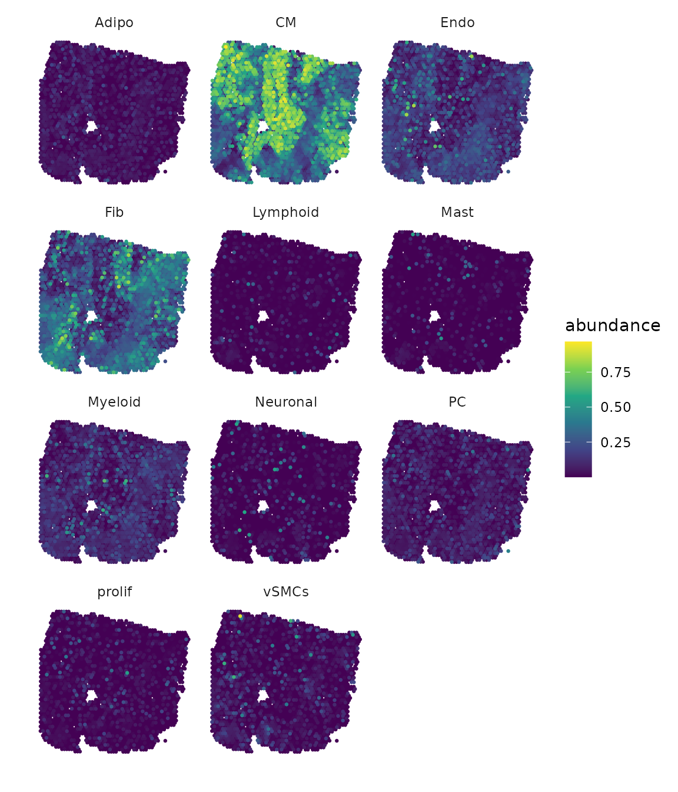
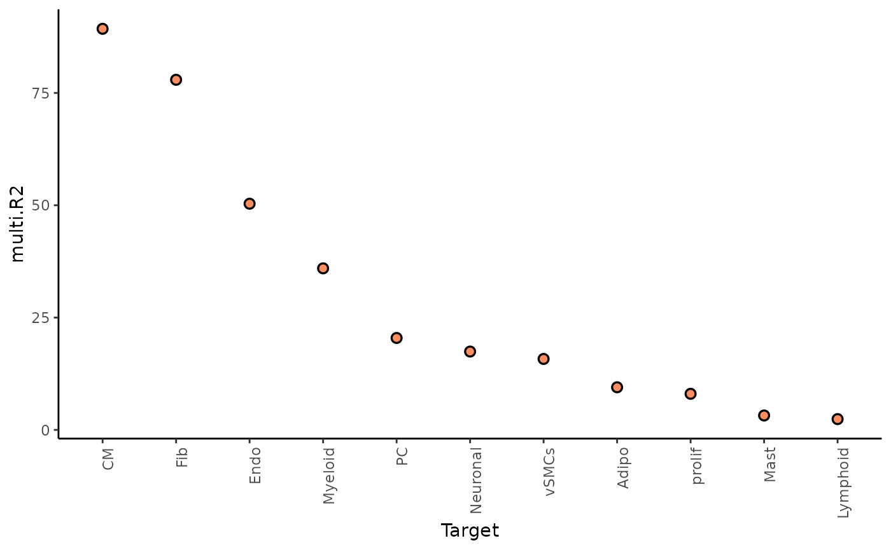
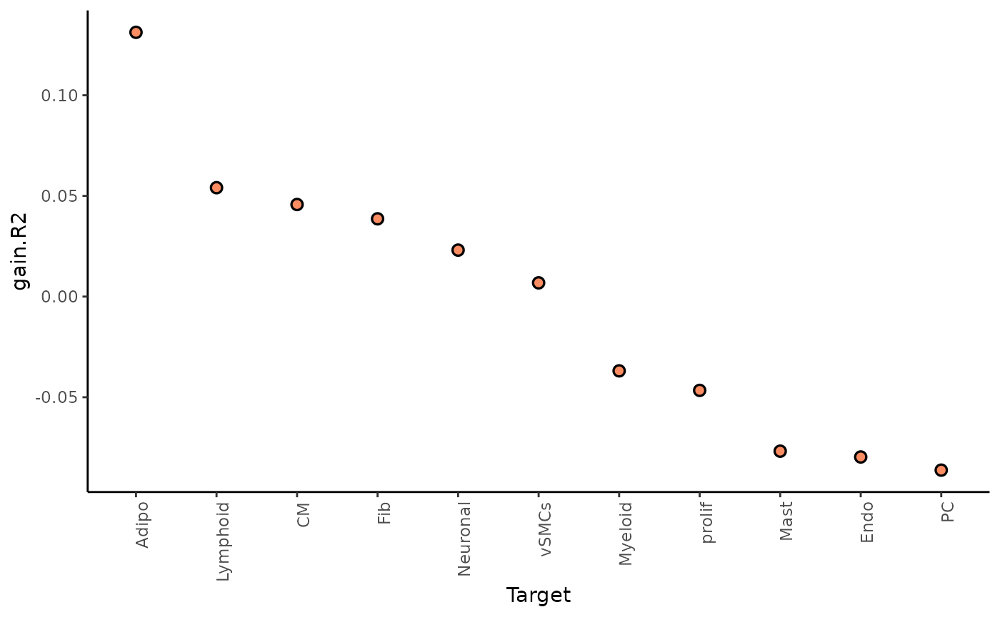
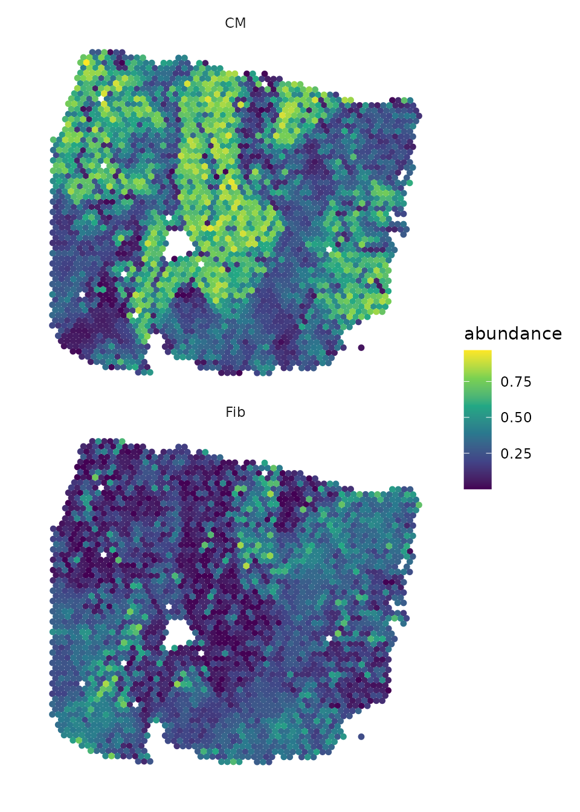
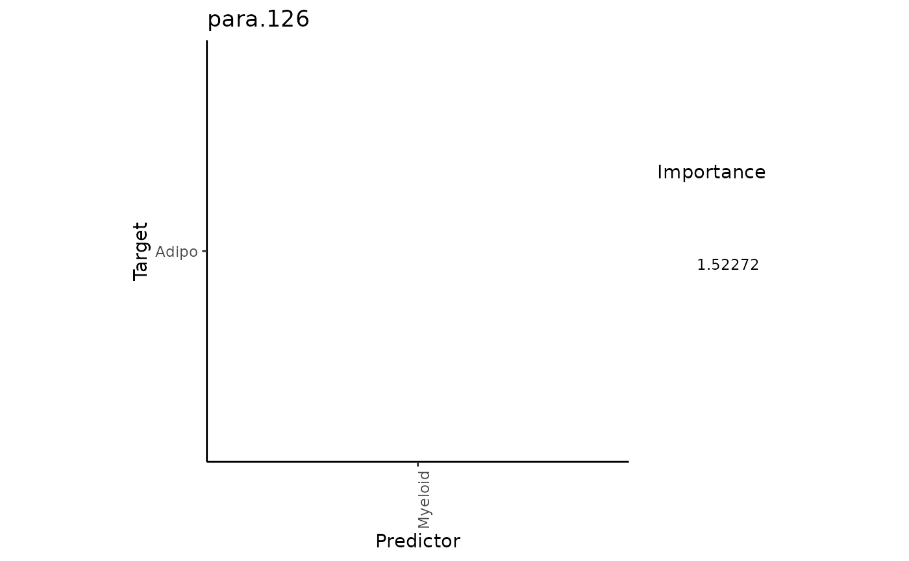

Structural analysis with MISTy - based on DOT deconvolution
Leoni Zimmermann
Heidelberg University, Heidelberg, GermanyJovan Tanevski
Heidelberg University and Heidelberg University Hospital, Heidelberg, GermanyJožef Stefan Institute, Ljubljana, Slovenia
jovan.tanevski@uni-heidelberg.de
2024-03-20
Source:vignettes/MistyRStructuralAnalysisPipelineDOT.Rmd
MistyRStructuralAnalysisPipelineDOT.RmdIntroduction
MISTy is designed to analyze spatial omics datasets within and
between distinct spatial contexts referred to as views. This analysis
can focus solely on structural information. Spatial transcriptomic
methods such as Visium capture information from areas containing
multiple cells. Then, deconvolution is applied to relate the measured
data of the spots back to individual cells. In this vignette we will use
the R package DOT for
deconvolution.
This vignette presents a workflow for the analysis of structural
data, guiding users through the application of mistyR to
the results of DOT deconvolution.
The package DOT can be installed from Github
remotes::install_github("saezlab/DOT").
Load the necessary packages:
Get and load the data
For this showcase, we use a 10X Visium spatial slide from Kuppe et al., 2022, where they created a spatial multi-omic map of human myocardial infarction. The tissue example data comes from the human heart of patient 14 which is in a later state after myocardial infarction. The Seurat object contains, among other things, the spot coordinates on the slides which we will need for decomposition First, we have to download and extract the file:
# Download the data
download.file("https://zenodo.org/records/6580069/files/10X_Visium_ACH005.tar.gz?download=1",
destfile = "10X_Visium_ACH005.tar.gz", method = "curl")
untar("10X_Visium_ACH005.tar.gz")The next step is to load the data and extract the location of the spots. The rows are shifted, which means that the real distances between two spots are not always the same. It is therefore advantageous to use the pixel coordinates instead of row and column numbers, as the distances between these are represented accurately.
spatial_data <- readRDS("ACH005/ACH005.rds")
geometry <- GetTissueCoordinates(spatial_data, cols = c("imagerow", "imagecol"), scale = NULL)For deconvolution, we additionally need a reference single-cell data
set containing a gene x cell count matrix and a vector containing the
corresponding cell annotations. Kuppe et al., 2022, obtained from each
sample isolated nuclei from the remaining tissue that they used for
snRNA-seq. The data corresponding to the same patient as the spatial
data will be used as reference data in DOT. First download
the file:
download.file("https://www.dropbox.com/scl/fi/sq24xaavxplkc98iimvpz/hca_p14.rds?rlkey=h8cyxzhypavkydbv0z3pqadus&dl=1",
destfile = "hca_p14.rds",
mode = "wb")Now load the data. From this, we retrieve a gene x cell count matrix and the respective cell annotations.
ref_data <- readRDS("hca_p14.rds")
ref_counts_P14 <- ref_data$counts
ref_ct <- ref_data$celltypesDeconvolution with DOT
Next, we need to set up the DOT object. The two inputs we need are the count matrix and pixel coordinates of the spatial data and the count matrix and cell annotations of the single-cell reference data.
dot.srt <-setup.srt(srt_data = spatial_data@assays$Spatial@counts, srt_coords = geometry)
dot.ref <- setup.ref(ref_data = ref_counts_P14, ref_annotations = ref_ct, 10)
dot <- create.DOT(dot.srt, dot.ref)Now we can carry out deconvolution:
# Run DOT
dot <- run.DOT.lowresolution(dot)The results can be found under dot@weights. To obtain
the calculated cell-type proportion per spot, we normalize the result to
a row sum of 1.
Visualize cell proportion in spots
Now we can visually explore the slide itself and the abundance of cell types at each spot.
# Tissue Slide
SpatialPlot(spatial_data, keep.scale = NULL, alpha = 0)
# Results DOT
draw_maps(geometry,
DOT_weights,
background = "white",
normalize = FALSE,
ncol = 3,
viridis_option = "viridis")
Based on the plots, we can observe that some cell types are found more frequently than others. Additionally, we can identify patterns in the distribution of cells, with some being widespread across the entire slide while others are concentrated in specific areas. Furthermore, there are cell types that share a similar distribution.
MISTy views
# Calculating the radius
geom_dist <- as.matrix(distances(geometry))
dist_nn <- apply(geom_dist, 1, function(x) (sort(x)[2]))
paraview_radius <- ceiling(mean(dist_nn+ sd(dist_nn)))
# Create views
heart_views <- create_initial_view(as.data.frame(DOT_weights)) %>%
add_paraview(geometry, l= paraview_radius, family = "gaussian")
# Run misty and collect results
run_misty(heart_views, "result/vignette_structural_pipeline")## [1] "/home/runner/work/mistyR/mistyR/vignettes/result/vignette_structural_pipeline"
misty_results <- collect_results("result/vignette_structural_pipeline")Downstream Analysis
With the collected results, we can now answer the following questions:
1. To what extent can the occurring cell types of the surrounding tissue explain the cell type composition of the spot compared to the intraview?
Here we can look at two different statistics: multi.R2
shows the total variance explained by the multiview model.
gain.R2 shows the increase in explainable variance from the
paraview.
misty_results %>%
plot_improvement_stats("multi.R2") %>%
plot_improvement_stats("gain.R2")## Warning: Removed 11 rows containing missing values or values outside the scale range
## (`geom_segment()`).
## Warning: Removed 11 rows containing missing values or values outside the scale range
## (`geom_segment()`).
The paraview particularly increases the explained variance for adipocytes and mast cells. In general, the significant gain in R2 can be interpreted as the following:
“We can better explain the expression of marker X when we consider additional views other than the intrinsic view.”
2. What are the specific relations that can explain the contributions?
To explain the contributions, we can visualize the importance of each
cell type in predicting the cell type distribution for each view
separately. With trim, we display only targets with a value
above 50 for multi.R2. To set an importance threshold we
would apply cutoff.
First, for the intrinsic view:
misty_results %>% plot_interaction_heatmap(view = "intra",
clean = TRUE,
trim.measure = "multi.R2",
trim = 50)We can observe that cardiomyocytes are a significant predictor for some cell types when in the same spot. To identify the target with the best prediction by cardiomyocytes, we can view the importance values as follows:
misty_results$importances.aggregated %>%
filter(view == "intra", Predictor == "CM") %>%
arrange(-Importance)## # A tibble: 11 × 5
## view Predictor Target Importance nsamples
## <chr> <chr> <chr> <dbl> <int>
## 1 intra CM Fib 2.82 1
## 2 intra CM vSMCs 2.72 1
## 3 intra CM Endo 2.64 1
## 4 intra CM PC 2.60 1
## 5 intra CM Myeloid 2.42 1
## 6 intra CM Adipo 2.36 1
## 7 intra CM Mast 1.23 1
## 8 intra CM Lymphoid 0.685 1
## 9 intra CM prolif 0.461 1
## 10 intra CM Neuronal -0.117 1
## 11 intra CM CM NA 1Let’s take a look at the spatial distribution of Cardiomyocytes and their most important target, fibroblasts, in the tissue slide:
draw_maps(geometry,
DOT_weights[, c("Fib", "CM")],
background = "white",
size = 1.25,
normalize = FALSE,
ncol = 1,
viridis_option = "viridis")
We can observe that areas with high proportions of cardiomyocytes have low proportions of fibroblasts and vice versa.
Now we repeat this analysis with the paraview:
misty_results %>% plot_interaction_heatmap(view = "para.126",
clean = TRUE,
trim = 0.1,
trim.measure = "gain.R2") 
Here, we select the target adipocytes, as we know from previous analysis that the paraview contributes a large part to explaining its distribution. The best predictor for adipocytes are Myeloid cells. To better identify the localization of the two cell types, we set the color scaling to a smaller range, as there are a few spots with a high proportion, which makes the distribution of spots with a low proportion difficult to recognize.
draw_maps(geometry,
DOT_weights[, c("Myeloid","Adipo")],
background = "white",
size = 1.25,
normalize = FALSE,
ncol = 1,
viridis_option = "viridis") +
scale_colour_viridis_c(limits = c(0,0.33))The plots show us that, in some places, the localization of the two cell types overlap.
Session Info
Here is the output of sessionInfo() at the point when
this document was compiled.
## R version 4.3.3 (2024-02-29)
## Platform: x86_64-pc-linux-gnu (64-bit)
## Running under: Ubuntu 22.04.4 LTS
##
## Matrix products: default
## BLAS: /usr/lib/x86_64-linux-gnu/openblas-pthread/libblas.so.3
## LAPACK: /usr/lib/x86_64-linux-gnu/openblas-pthread/libopenblasp-r0.3.20.so; LAPACK version 3.10.0
##
## locale:
## [1] LC_CTYPE=C.UTF-8 LC_NUMERIC=C LC_TIME=C.UTF-8
## [4] LC_COLLATE=C.UTF-8 LC_MONETARY=C.UTF-8 LC_MESSAGES=C.UTF-8
## [7] LC_PAPER=C.UTF-8 LC_NAME=C LC_ADDRESS=C
## [10] LC_TELEPHONE=C LC_MEASUREMENT=C.UTF-8 LC_IDENTIFICATION=C
##
## time zone: UTC
## tzcode source: system (glibc)
##
## attached base packages:
## [1] stats graphics grDevices utils datasets methods base
##
## other attached packages:
## [1] distances_0.1.10 lubridate_1.9.3 forcats_1.0.0 stringr_1.5.1
## [5] dplyr_1.1.4 purrr_1.0.2 readr_2.1.5 tidyr_1.3.1
## [9] tibble_3.2.1 ggplot2_3.5.0 tidyverse_2.0.0 Seurat_5.0.3
## [13] SeuratObject_5.0.1 sp_2.1-3 DOT_0.0.0.9000 future_1.33.1
## [17] mistyR_1.10.0 BiocStyle_2.30.0
##
## loaded via a namespace (and not attached):
## [1] RcppAnnoy_0.0.22 splines_4.3.3 later_1.3.2
## [4] filelock_1.0.3 fields_15.2 R.oo_1.26.0
## [7] polyclip_1.10-6 hardhat_1.3.1 pROC_1.18.5
## [10] rpart_4.1.23 fastDummies_1.7.3 lifecycle_1.0.4
## [13] vroom_1.6.5 globals_0.16.3 lattice_0.22-5
## [16] MASS_7.3-60.0.1 magrittr_2.0.3 plotly_4.10.4
## [19] sass_0.4.9 rmarkdown_2.26 jquerylib_0.1.4
## [22] yaml_2.3.8 rlist_0.4.6.2 httpuv_1.6.14
## [25] sctransform_0.4.1 spam_2.10-0 spatstat.sparse_3.0-3
## [28] reticulate_1.35.0 cowplot_1.1.3 pbapply_1.7-2
## [31] RColorBrewer_1.1-3 maps_3.4.2 abind_1.4-5
## [34] Rtsne_0.17 R.utils_2.12.3 nnet_7.3-19
## [37] ipred_0.9-14 lava_1.8.0 ggrepel_0.9.5
## [40] irlba_2.3.5.1 listenv_0.9.1 spatstat.utils_3.0-4
## [43] goftest_1.2-3 RSpectra_0.16-1 spatstat.random_3.2-3
## [46] fitdistrplus_1.1-11 parallelly_1.37.1 pkgdown_2.0.7
## [49] leiden_0.4.3.1 codetools_0.2-19 tidyselect_1.2.1
## [52] farver_2.1.1 stats4_4.3.3 matrixStats_1.2.0
## [55] spatstat.explore_3.2-6 jsonlite_1.8.8 caret_6.0-94
## [58] ellipsis_0.3.2 progressr_0.14.0 ggridges_0.5.6
## [61] survival_3.5-8 iterators_1.0.14 systemfonts_1.0.6
## [64] foreach_1.5.2 tools_4.3.3 ragg_1.3.0
## [67] ica_1.0-3 Rcpp_1.0.12 glue_1.7.0
## [70] prodlim_2023.08.28 gridExtra_2.3 xfun_0.42
## [73] ranger_0.16.0 withr_3.0.0 BiocManager_1.30.22
## [76] fastmap_1.1.1 fansi_1.0.6 digest_0.6.35
## [79] timechange_0.3.0 R6_2.5.1 mime_0.12
## [82] textshaping_0.3.7 colorspace_2.1-0 scattermore_1.2
## [85] tensor_1.5 spatstat.data_3.0-4 R.methodsS3_1.8.2
## [88] utf8_1.2.4 generics_0.1.3 data.table_1.15.2
## [91] recipes_1.0.10 class_7.3-22 httr_1.4.7
## [94] ridge_3.3 htmlwidgets_1.6.4 ModelMetrics_1.2.2.2
## [97] uwot_0.1.16 pkgconfig_2.0.3 gtable_0.3.4
## [100] timeDate_4032.109 lmtest_0.9-40 furrr_0.3.1
## [103] htmltools_0.5.7 dotCall64_1.1-1 bookdown_0.38
## [106] scales_1.3.0 png_0.1-8 gower_1.0.1
## [109] knitr_1.45 tzdb_0.4.0 reshape2_1.4.4
## [112] nlme_3.1-164 cachem_1.0.8 zoo_1.8-12
## [115] KernSmooth_2.23-22 parallel_4.3.3 miniUI_0.1.1.1
## [118] desc_1.4.3 pillar_1.9.0 grid_4.3.3
## [121] vctrs_0.6.5 RANN_2.6.1 promises_1.2.1
## [124] xtable_1.8-4 cluster_2.1.6 evaluate_0.23
## [127] cli_3.6.2 compiler_4.3.3 crayon_1.5.2
## [130] rlang_1.1.3 future.apply_1.11.1 labeling_0.4.3
## [133] plyr_1.8.9 fs_1.6.3 stringi_1.8.3
## [136] viridisLite_0.4.2 deldir_2.0-4 assertthat_0.2.1
## [139] munsell_0.5.0 lazyeval_0.2.2 spatstat.geom_3.2-9
## [142] Matrix_1.6-5 RcppHNSW_0.6.0 hms_1.1.3
## [145] patchwork_1.2.0 bit64_4.0.5 shiny_1.8.0
## [148] highr_0.10 ROCR_1.0-11 igraph_2.0.3
## [151] memoise_2.0.1 bslib_0.6.1 bit_4.0.5